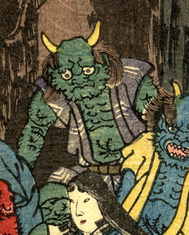

肌が緑色の鬼。座っている。頭頂には2本の角が生えている。紺の羽織を着ている。
著作者：錦朝樓芳虎／出典：親書誌：U426_nichibunken_0234：大江山鬼賊住家圖；オオエヤマキゾクスミカノズ／日付：2010／資源識別子：U426_nichibunken_0234_0003_0000
Copyright (c)2010- International Research Center for Japanese Studies, Kyoto, Japan. All rights reserved.